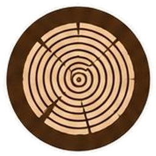
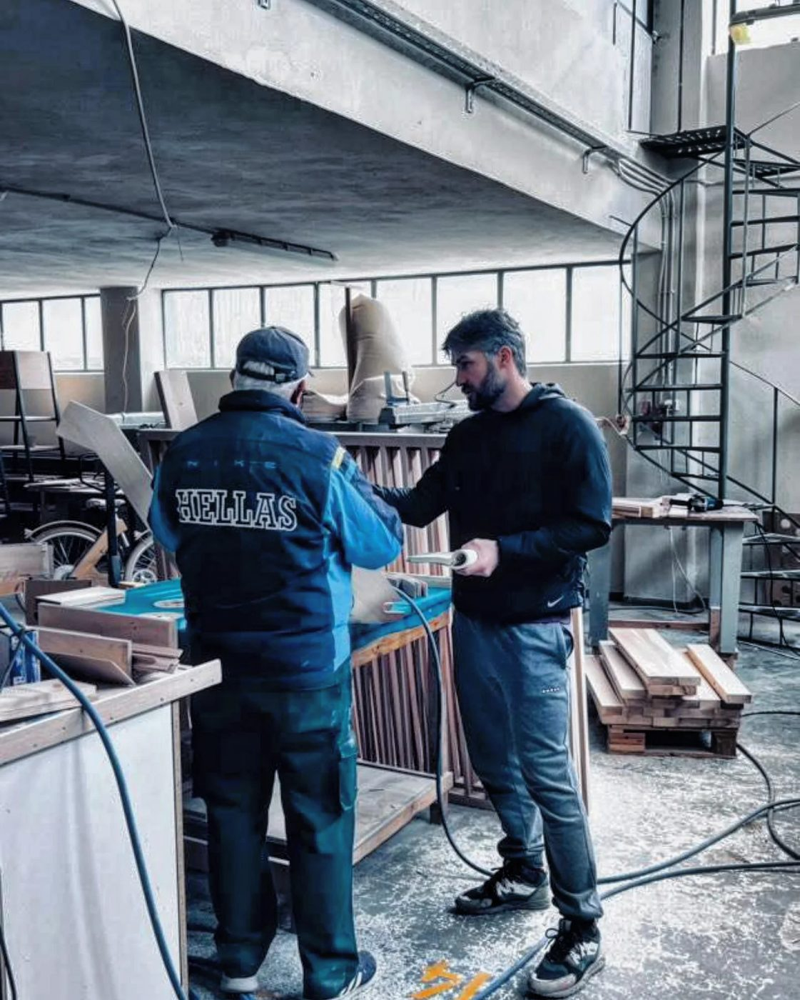

Wooden bicycles
Bicycles with frames shaped by hand from wood, in our workshop in Greece. Based in Belgium.


Why wood
Wood is renewable, stores carbon and can need less energy to produce than steel or aluminium. Its benefits depend on how it is sourced, processed and used.
Trees can regrow after harvesting. When forests are responsibly managed, wood can be produced continuously without permanently depleting the resource.
Trees absorb CO₂ during growth and store carbon in their wood. A wooden bicycle frame retains some of that carbon throughout its lifetime.
Processing and shaping wood can require less energy than producing primary aluminium or steel, although adhesives, coatings and manufacturing methods affect the comparison.
Properly engineered and protected wooden frames can be durable. A long-lasting, repairable bicycle reduces the need for replacement.
Using locally sourced, FSC- or PEFC-certified timber can support responsible forestry and reduce transport-related emissions.
Biophilia
bio — life, philia — friendship. To be close to natural life.
Workshop
